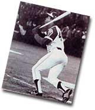
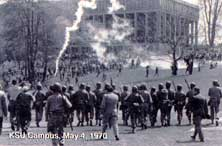

APRIL
1 Daylight-saving time begins, 2:00 a.m.; FIRST QUARTER MOON, 6:49 a.m. EDT; April Fools' Day (All Fools' Day); Venus returns as the "morning star," bright and low in the east about 45 to 30 minutes before sunrise.
2 Pascua Florida Day; 56 tornadoes in 11 states killed 30 people and injured 383 this day in 1982; brightening Mars rises around 1:00 a.m., glowing orange-gold and now shining brightly as any star (by month's end it will be twice as brilliant and will continue to brighten as Earth pulls toward it).
3 Washington Irving, author of The Legend of Sleepy Hollow and Rip van Winkle born, 1783; start of Pony Express in 1860 - mail delivered in eight-day ride from Missouri to California; Jesse James killed, 1882.
4 Martin Luther King Jr., assassinated this day 1968; second and last day of "Super Outbreak" - 148 tornadoes in 13 states killing 315 people and injuring more than 5,400 in 1974.
5 Major Colorado snowstorm dumped a foot of snow on Boulder and kept temperatures from below freezing in Denver for three days in a row starting today, 1982.
6 Admiral Peary reached the North Pole, 1909; Joseph Smith founded Mormon Church at Fayette, New York, 1830.
7 FULL MOON, 11:22 p.m. EDT
Hank Aaron's record-breaking run, April 8, 1974
8 Palm Sunday; first day of Passover; Pablo Picasso died, 1973; Hank Aaron hit recordbreaking 715th home run, 1974.
9 Saturn 6° from the tiny dipper-shaped Pleiades star cluster (look for them rather low in the west as evening twilight fades away).
10 American Society for the Prevention of Cruelty to Animals founded this day in 1866.
11 Palm Sunday tornado outbreak in 1965 killed 257 people.
12 Holy Thursday; Jupiter, brightest point of light at nightfall, lies 5° from the bright orange star Aldebaran (eye of Taurus the Bull) - look for them above Saturn and the Pleiades but rather low in the west as evening twilight fades, after midnight tonight, between 1:00 and 2:00 a.m.; Yuri Gagarin is the first person to enter outer space and to orbit the Earth, 40 years ago today; first launch of Space Shuttle Columbia, 20 years ago today.
13 Good Friday coincides with Friday the 13th (there will be another such ominous Friday this year in July); Thomas Jefferson's birthday.
14 Titanic hit iceberg,
15 Easter; LAST QUARTER MOON, 11:31 a.m. EDT; Abraham Lincoln died, 1865 (he was shot the previous evening).
16 Liberty Bell rung for peace with England, 1783.
17 Benjamin Franklin died, 1790.
18 Sun enters constellation Aries, 4 p.m. EDT; San Francisco earthquake, 1906; first Laundromat in U.S. opened in Fort Worth, Texas, 1934.
19 Patriots Day; Oklahoma City bombing, 1995; Charles Darwin died, 1882.
20 Look for Lyrid meteors from northeast in late evening for next few days.
21 Queen Elizabeth II born 75 years ago today.
22 Earth Day.
23 NEW MOON, 11:26 a.m. EDT; St. George's Day; Mercury at superior conjunction with sun and unviewable.
25 Secretaries' Day; moon crescent between Saturn and Aldebaran, low in west about 45 minutes after sunset; Ella Fitzgerald born, 1917.
26 Crescent moon upper left of Jupiter in west at nightfall.
27 National Arbor Day.
28 Astronomy Day; Fletcher Christian led mutiny on the H.M.S. Bounty, 1789.
29 Allies liberated Dachau concentration camp, 1945; St. Catherine's Day; 24 inches of snow in parts of New Jersey this day in 1874.
30 FIRST QUARTER MOON (second time this month), 1:08 p.m. EDT; Venus now rises 90 minutes before the sun and is brilliant in east at dawn.
MAY
1 May Day; this week, look for a few Eta Aquarid meteors (streaks of light from actual dust of Halley's Comet) shooting out of southeast just before morning twilight for next five or six days.
2 Venus at brightest as "morning star" this week - visible to the unaided eye until long after sunrise on very clear mornings; Leonardo da Vinci died this day in 1519.
3 In New Orleans, 11.6 inches of rain fell this day, 1978.
4 Four Kent State students killed by National Guardsmen, 1970.
5 Cinqo de Mayo.
6 Mathematical halfway point of spring; next few evenings, look for Saturn to the lower left of much brighter Mercury very low in west-northwest about 45 minutes after sunset; birthday of Sigmund Freud (1856) and Willie Mays (1931).
7 FULL MOON, 9:52 a.m. EDT; Lusitania torpedoed, 1915; Germany surrendered to Allies, 1945; Brahms born (1833), Tchaichovsky born (1840).
8 Truman Day (in Missouri).
9 Late these next two evenings (today and tomorrow), brilliant Mars and moon in southeast together; latest opening of Lake Erie to navigation at Buffalo, 1926.
10 Pounding of the Golden Spike to complete the transcontinental railroad in Utah, 1869.
11 First of consecutive days of the three "Ice Saints" (this is the expected time for the last killing frost in parts of northern Europe); 15.5 inches of snow fell on Williston, North Dakota, this day in 1983.
12 The glowing patch of the Lagoon Nebula visible through binoculars in dark country skies, it will be near the blazing orange-gold Mars late these next few evenings.
13 Mother's Day; sun enters constellation Taurus, 7 p.m. EDT
14 Lewis and Clark expedition set out from St. Louis this day in 1804; Israel gained independence, 1948.
15 LAST QUARTER MOON, 6:11 a.m. EDT; Census Day in Canada; today and tomorrow, look for Mercury just to upper right of brighter Jupiter, low in west about 45 minutes after sunset.
16 Mars now rises before 11 p.m. and shines several times brighter than any point of light visible until Venus rises around 4 a.m.
17 First running of the Kentucky Derby, 1875.
18 Mount St. Helens great eruption, 1980.
19 Armed Forces Day; Ulysses S. Grant begins siege of Vicksburg, 1863.
20 Sun enters astrological sign of Gemini but is really still in the constellation Taurus.
21 Mercury at greatest evening elongation (maximum apparent separation) from the sun.
22 NEW MOON, 10:46 p.m. EDT; Victoria Day in Canada.
23 Look for extremely slender crescent moon just above west-northwest horizon about 30 minutes after.
24 Ascension Day; slender crescent moon left of Mercury about 45 minutes after sunset and very low in west-northwest; Bob Dylan born 60 years ago this day.
25 Saturn at conjunction with the sun and thus unviewable.
26 A St. Louis tornado kills 450 people, 1896.
27 First running of the Preakness,1873.
28 Memorial Day (observed); Shavuot; Amnesty International founded 40 years ago today.
29 FIRST QUARTER MOON, 6:09 p.m, EDT; John F Kennedy born, 1917; Oak Apple Day or Restoration Day in England.
30 Traditional date of Memorial Day.
31 Johnstown, Pennsylvania flood of 1889.
|
 |
 |
|